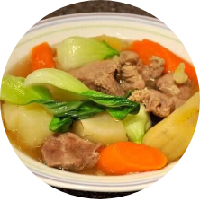

Beef Nilaga

Ingredients
- 2 lbs beef brisket cubed
- 1 big potato cubed
- 1 bok choy or pechay
- 1 large onion chopped
- 2 medium sized carrots chopped crosswise (w/ length of about 2 inches)
- 1 tbsp whole pepper corn
- 3 tbsp fish sauce patis
Cooking Instructions
- Saute the onion until texture becomes soft.
- Add-in the beef brisket and cook for about 5 minutes.
- Add the fish sauce and whole pepper corn then mix well.
- Pour-in the water and bring to a boil. Simmer for 1 to 2 hours (or 30 minutes if using pressure cooker).
- Put-in the vegetables starting with the potato and the carrots. Simmer for 5 to 7 minutes.
- Add the bok choy (Pechay). Cover the pot and turn off the heat. Let it stay for 5 minutes.
- Serve hot. Share and Enjoy!